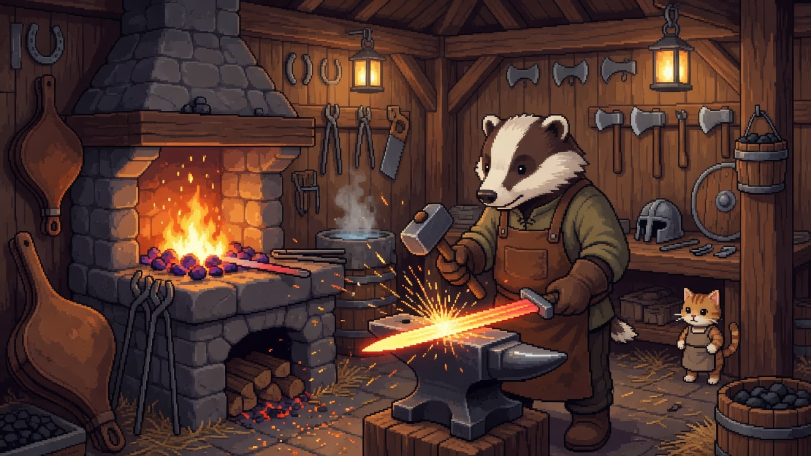
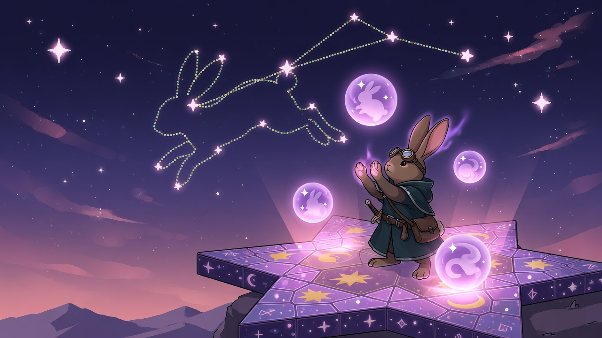
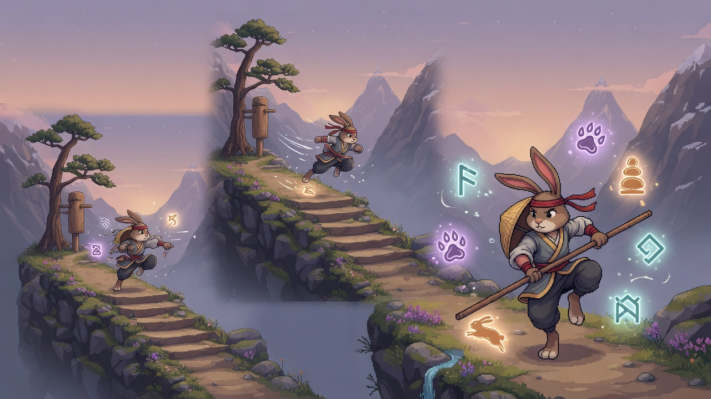

器 · 鍛造升階
找釘釘把武器升階（失敗不掉階）。職系武器可鍛造切換；材料來自野外掉落與琥珀材料行。
遊戲內：騎士堡鐵匠鋪 · Esc 裝備
一句話：鐵匠養器 · 星途養魂 · 旅途養招。與「武器流派」正交，不互相取代。

找釘釘把武器升階（失敗不掉階）。職系武器可鍛造切換；材料來自野外掉落與琥珀材料行。
遊戲內：騎士堡鐵匠鋪 · Esc 裝備

是你原本的戰魂系統，但已去 gacha 化：不用每日抽、不付費。路上撿星屑→找星讀舉行觀星→得到可嵌可拆的戰魂（偏暴擊／攻防等）。
足跡權重影響星型 · 3 合 1 合成 · 秘境魂器

戰鬥與演武場累積熟練自動升級。武器流派會解鎖對應招式線（劍連斬、法星芒、拳破勢等，持續擴充）。
Esc → 技能／招式 · 演武場每日練功
「星途」是世界觀裡的連線／命運隱喻，也是戰魂養成的入口名。
docs/PROGRESSION.md。舊版暫時把「偏血防的養成風格」叫成鐵骨守護，容易讓人以為是職業。
例：選弓（遠距暴擊）＋養魂偏暴擊星＋升器階＋熟練招。換槍流派會改被動與技能權重，戰魂可拆到新武器。